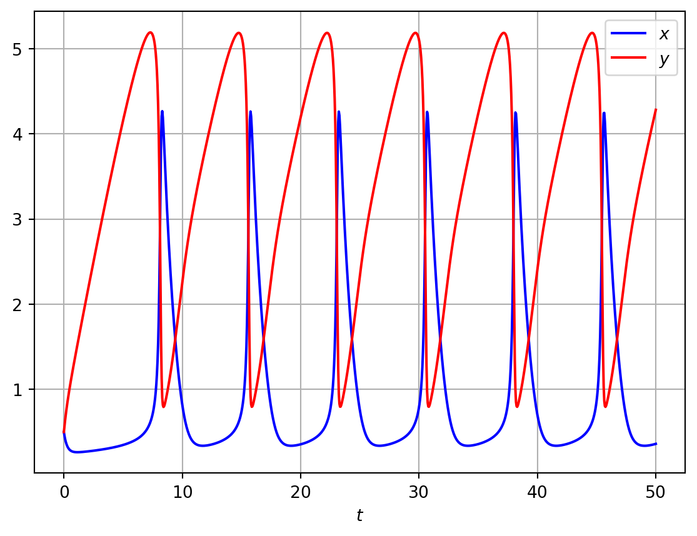
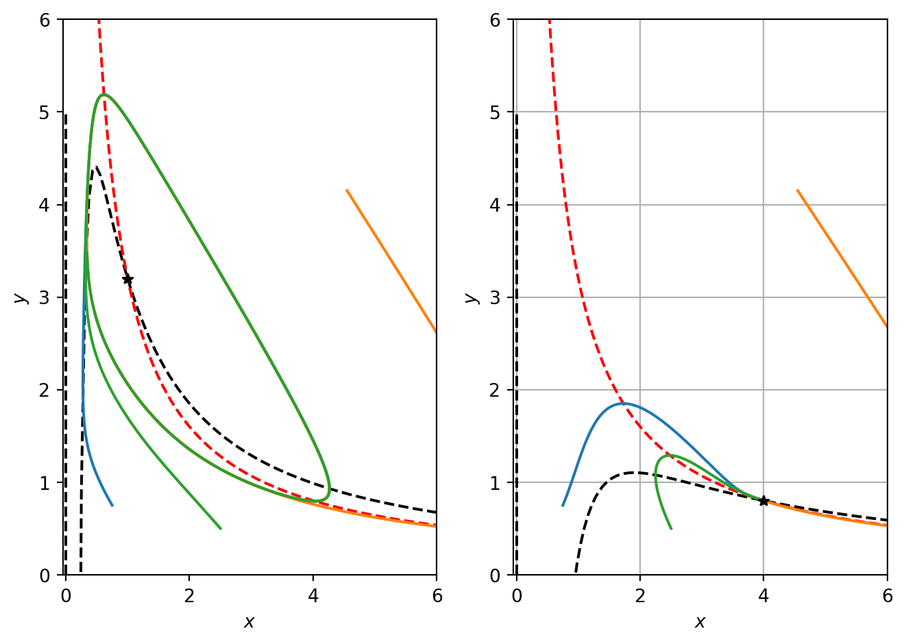

As the dynamics uncouple we can treat the variables separately. The \(r\) equation \[
\dot{r}=r(1-r^2)
\] has fixed points at \(r^*=0\) and \(r^*=1\). \(r^*=0\) is unstable whilst \(r^*=1\) is stable. Hence all trajectories (except \(r^*=0\)) tend to the circle \(r^*=1\) as \(t\rightarrow \infty\).
6.2.2 Van der Pol
Consider the Van der Pol equation \[
\ddot{x}+\mu(x^2-1)\dot{x}+x=0
\] where \(\mu\geq 0\).
The nonlinear term acts as a positive damping term for \(|x|>1\) and negative damping term for \(|x|<1\). Here we show using numerical solutions that the solutions tends to a limit cycle.
6.3 Ruling out closed orbits
In some situations we may wish to rule out the possibilty that closed orbits exist.
6.3.1 Gradient systems
Suppose a system can be written in gradient form \[
\dot{\mathbf{x}}=-\nabla V
\] for some continuously differentiable, single values scalar function, \(V\).
Theorem 1
Closed orbits are impossible in gradient systems.
Example 6.1 Show that the system \[
\begin{aligned}
\dot{x} & =\sin y\\
\dot{y} &= x\cos y.
\end{aligned}
\] has no closed orbits.
Hint: write the system in gradient form.
Example 6.2 Show that the system \[
\begin{aligned}
\ddot{x} + \dot{x}^3+x=0
\end{aligned}
\] has no closed orbits.
Hint: consider the energy function \[
E=\frac{1}{2}(x^2+\dot{x}^2).
\]
6.3.2 Liapunov functions
Even for systems that are not mechanical, we can try to construct an energy-like Liapunov function that decreases along trajectories. If a Liapunov function exists, closed orbits are impossible.
Theorem 2
Consider a system \(\dot{\mathbf{x}}=\mathbf{f}(\mathbf(x))\). Suppose that we can find a Liapunov function, i.e. a continuoulsly differentiable real valued function that satisfies: - \(V(x)>0 \forall x\neq x^*\) - \(\dot{V<0} \forall x\neq x^*\)
\(\mathbf{x}^*\) is globally asymptotically stable. for all initial conditions \(\mathbf{x}(t)\rightarrow \mathbf{x}^*\) as \(t\rightarrow \infty\).
Example 6.3 By constructing a Liapunov function, show that the system \[
\begin{aligned}
\dot{x} & =-x+4y\\
\dot{y} &= -x-y^3.
\end{aligned}
\] has no closed orbits.
There is not a systematic technique to find Liapunov functions.
6.3.3 Dulac’s criterion
A third method relies on Green’s theorem in the plane.
Theorem 3
Dulac’s criterion
Consider a 2D system \(\dot{\mathbf{x}}=\mathbf{f}(\mathbf(x))\). Let \(\mathbf{f}\) be a continuously differentiable vector field on a simply connected subset \(D\) of the plane. If there exists a continuously differentiable real-valued function \(g\) such that \(\nabla. (g\dot{\mathbf{x}})\) has one sign throughout \(D\), there are no closed orbits in \(D\).
Example 6.6 By applying Dulac’s criterion, show that the system \[
\begin{aligned}
\dot{x} & =x(2-x-y)\\
\dot{y} &= y(4x-x^2-3).
\end{aligned}
\] has no closed orbits.
::
6.4 Poincare-Bendixson theorem
For particular 2D systems it is also possible to proof the existence of closed orbits. Suppose we can construct a confined set that contains an unstable isolated fixed point. The long time solution must be a periodic orbit.
Theorem
Suppose that 1. \(D\) is a closed subset of the plane. 2. \(\dot{\mathbf{x}}=\mathbf{f}(\mathbf(x))\) is a continuously differentiable vector field on an open subset containing \(D\). 3. \(D\) does not contain any fixed points 4. There exists a trajectory \(C\) that is confined in \(D\).
Either \(C\) is a closed orbit or it spirals t. closed orbit as \(t\rightarrow \infty\).
Example 6.4 Consider the system \[
\begin{aligned}
\dot{r} & = r(1-r^2)+\mu r\cos(\theta)\\
\dot{\theta} &= 1.
\end{aligned}
\] where \(\mu \in \Re\). Show that there is a closed orbit for \(\mu\) sufficiently small.
Corollary
Chaotic solutions cannot exist in systems of two ODEs.
6.5 The Brusselator
A nondimensional model for a biological oscillator is given by \[
\begin{aligned}
\frac{d x}{d \tau} &= a-bx+x^2y-x = f(x,y), \\
\frac{d y}{d \tau} &= bx-x^2y = g(x,y),
\end{aligned}
\tag{6.1}\]
6.5.1 Steady states analysis
Seeking steady states \((x^*,y^*)\) of equations Equation 6.1 such that \[
f(x^*,y^*)=g(x^*,y^*)=0
\] yields
Hence \((a,b/a)\) is not a saddle. The trace of the Jacobian is \[
\mathrm{tr} A=b-1-a^2.
\]
Hence if \(b>1+a^2\) the trace is positive and, referring to Figure 4.1, the steady state is linearly unstable. Otherwise, the steady state is linearly stable.
In Figure 6.1 we numerically solve Equation 6.1 in the case of oscillatory solutions. Note that when the steady state is unstable, the numerical solution indicates that the system has limit cycle solutions. A valid question to ask is whether one can prove that this is the case.
import numpy as npimport matplotlib.pyplot as pltimport scipyfrom scipy.integrate import odeint# Define model parametersa=1.0b=3.2# Compute RHS of the brusselator modeldef rhs_bruss_model(z,t): rhs=np.zeros_like(z) x=z[0] y=z[1] dx_dt=a-b*x+x**2*y-x dy_dt=b*x-x**2*y rhs[0]=dx_dt rhs[1]=dy_dtreturn rhs# Define time domain and discretiset = np.linspace(0, 50, 1000)# Define ICsinit_cond=[0.5,0.5]# Integrate ODEssol1 = odeint(rhs_bruss_model, init_cond,t)# Plotmresultsx=sol1[:,0]y=sol1[:,1]fig, ax= plt.subplots()ax.plot(t, x, 'b',t,y,'r')ax.legend(['$x$','$y$'],loc='best')ax.set_xlabel('$t$')plt.grid()plt.show()

Figure 6.1: Numerical solutions of the Brusselator model
6.5.3 Applying the Poincaire-Bendixson theorem
Recall that the Poincaire-Bendixson theorem can be used to prove the existence of limit cycle solutions in a case where a bounding set encloses a single unstable steady state. Hence given the case of the Brusselator with \(b>a^2+1\), the identification of a bounding set will allow application of the Poincaire-Bendixson theorem and hence prove the existence of limit cycle solutions.
We begin by defining the nullclines of the system. The \(x\) nullcline is given by
\[
y=\frac{1+b}{x}-\frac{a}{x^2}.
\]
The \(y\) nullclines are given by
\[
y=\frac{b}{x} \ \ \ \textrm{and} \ \ \ x=0.
\]
In the positive quadrant, this nullcline has a single root at \(a/(1+b)\), tends to 0 as \(x\rightarrow \infty\) and has a maximum at \(x=2a/(1+b)\).
import numpy as npimport matplotlib.pyplot as pltimport scipyfrom scipy.integrate import odeint# Discretise x for plotting nullclinesx_vec=np.linspace(0.01,6,100)# COmpute quantities needed for pahse planedef ComputeBrusselatorSol(a,b,x_vec): t = np.linspace(0, 10, 1000)# Define different ICs init_cond1=[0.75,0.75] init_cond2=[4.55,4.15] init_cond3=[2.5,0.5]# steady state ss=[a,b/a]# Integrate ODEs alpha=2.0 sol1 = odeint(rhs_bruss_model, init_cond1,t) sol2 = odeint(rhs_bruss_model, init_cond2,t) sol3 = odeint(rhs_bruss_model, init_cond3,t)# Compute nullclines x_ncline=(1+b)/x_vec-a/x_vec**2 y_ncline_1_a=[0,0] y_ncline_1_b=[0,5] y_ncline_2_x=b/x_vecreturn sol1,sol2,sol3,ss,x_ncline,y_ncline_1_a,y_ncline_1_b,y_ncline_2_x# Compute quantitieda=1.0b=3.2sol1,sol2,sol3,ss,x_ncline,y_ncline_1_a,y_ncline_1_b,y_ncline_2_x=ComputeBrusselatorSol(a,b,x_vec)# PLot resultsfig, ax = plt.subplots(1,2)ax[0].plot(x_vec,x_ncline,'k--')ax[0].plot(y_ncline_1_a,y_ncline_1_b,'k--')ax[0].plot(x_vec,y_ncline_2_x,'r--')ax[0].plot(sol1[:,0],sol1[:,1],sol2[:,0],sol2[:,1],sol3[:,0],sol3[:,1])ax[0].plot(ss[0],ss[1],'k*')ax[0].set_xlabel('$x$')ax[0].set_ylabel('$y$')ax[0].set_xlim([-0.05,6])ax[0].set_ylim([-0.005,6])# Try different parametersa=4.0b=3.2# Recompute quantitiessol1,sol2,sol3,ss,x_ncline,y_ncline_1_a,y_ncline_1_b,y_ncline_2_x=ComputeBrusselatorSol(a,b,x_vec)# PLot resultsax[1].plot(x_vec,x_ncline,'k--')ax[1].plot(y_ncline_1_a,y_ncline_1_b,'k--')ax[1].plot(x_vec,y_ncline_2_x,'r--')ax[1].plot(sol1[:,0],sol1[:,1],sol2[:,0],sol2[:,1],sol3[:,0],sol3[:,1])ax[1].plot(ss[0],ss[1],'k*')ax[1].set_xlabel('$x$')ax[1].set_ylabel('$y$')ax[1].set_xlim([-0.05,6])ax[1].set_ylim([-0.005,6])plt.tight_layout()plt.grid()plt.show()

Figure 6.2: Numerical solution of the Brusselator.
In Figure 6.2 we plot the the oscillatory solution together with the nullclines. Note that the nullclines separate the phase plane into regions of constant sign. Note that the \(x\) nullcline separates the phase plane into regions where \(dx/dt>0\) and \(dx/dt<0\). Similarly, the \(y\) nullcline separates the phase plane into regions where \(dy/dt>0\) and \(dy/dt<0\).
Note that signs for \(dx/dt\) can be determined by considering behaviour of the function \(f\) as one moves away from the nullcline where, by definition, \(f=0\). Consider some point that sits on the x nullcline. While keeping the \(x\) value fixed, increase \(y\) so the point moves vertically in the phase plane. This implies that \(f\) has increased because the only term to change is \(x^2y\). Hence \(f\) increases upon increasing \(y\) and therefore \(dx/dt\) is positive for all points above the \(x\) nullcline. Alternatively, note that in the Jacobian matrix we have calculated that \(\partial f/\partial y\) is positive.
6.5.3.1 A confined set
To define a confined set, we construct the closed loop ABCDEA in phase space (see Figure 6.3) where the points A, B, C, D and E are defined as follows. Let the points A and B be two points on the \(x\) axis with coordinates \[
(\delta,0)
\] and \[
\left(\frac{a}{1+b},0\right).
\] respectively. We choose \(\delta>a\). The outward normal to the line segment AB is \(\mathbf{n}=[0,-1]\). To show that the trajectories point inwards along AB, we compute
Hence trajectories point inwards on the line segment BC.
Consider the line segment CD where D has coordinates \[
\left(k,b\frac{1+b}{a}\right),
\] with \(k>a\)
The normal to this line segment is [0,1]. As CD lies in a region of the phase plane where \(dy/dt<0\),
\[
\mathbf{n}.\left[\frac{dx}{dt},\frac{dy}{dt}\right] = \frac{dy}{dt}<0.
\] Hence trajectories point inwards on the line segment CD.
Let E be a point that sits on the \(x\) nullcline at some position \[
\left(\delta,\frac{\delta(1+b)-a}{\delta^2}\right),
\] such that DE is a straight line with outwardly pointing normal vector \([1,1]\). Along DE
Figure 6.3: Numerical solution of the Brusselator.
Hence at all points on the closed loop ABCDEA trajectories point inwards (see Figure 6.3). Hence ABDCEA is a confined set and the Poincaire-Bendixson theorem states that the system exhibits limit cycle solutions when the steady state is unstable. This is precisely the behaviour that we see numerically in Figure Figure 6.2.
6.6 Relaxation oscillators
Consider the van Der Pol equation \[
\ddot{x}+\mu(x^2-1)\dot{x}+x=0
\] in the limiting case \(\mu\gg1\). Here the nonlinear term is large.
Example 6.5 Show that the period of the van der Pol oscillator is \[
\mu(3-2\ln 2).
\]